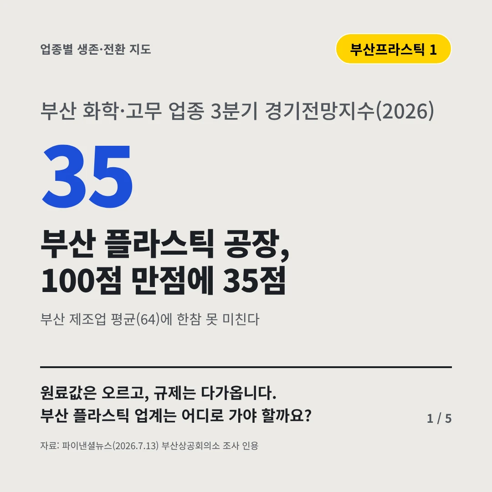
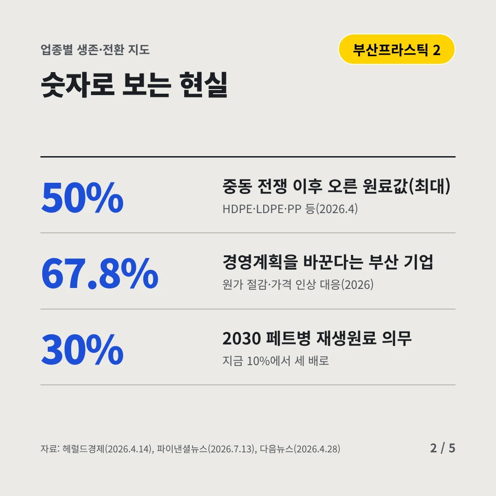
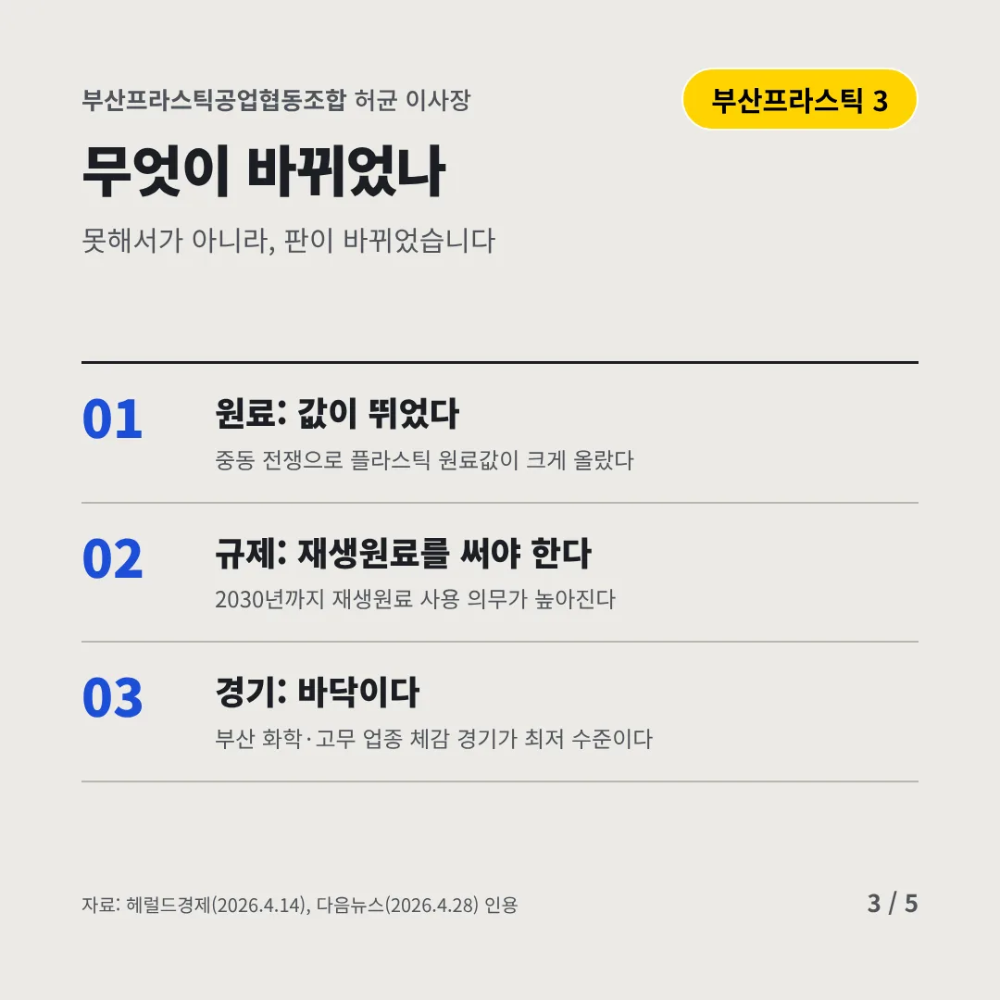
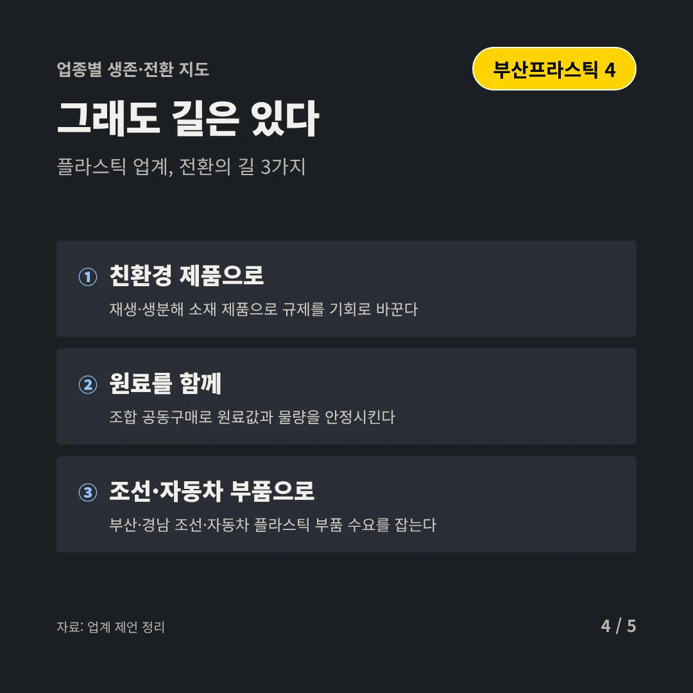
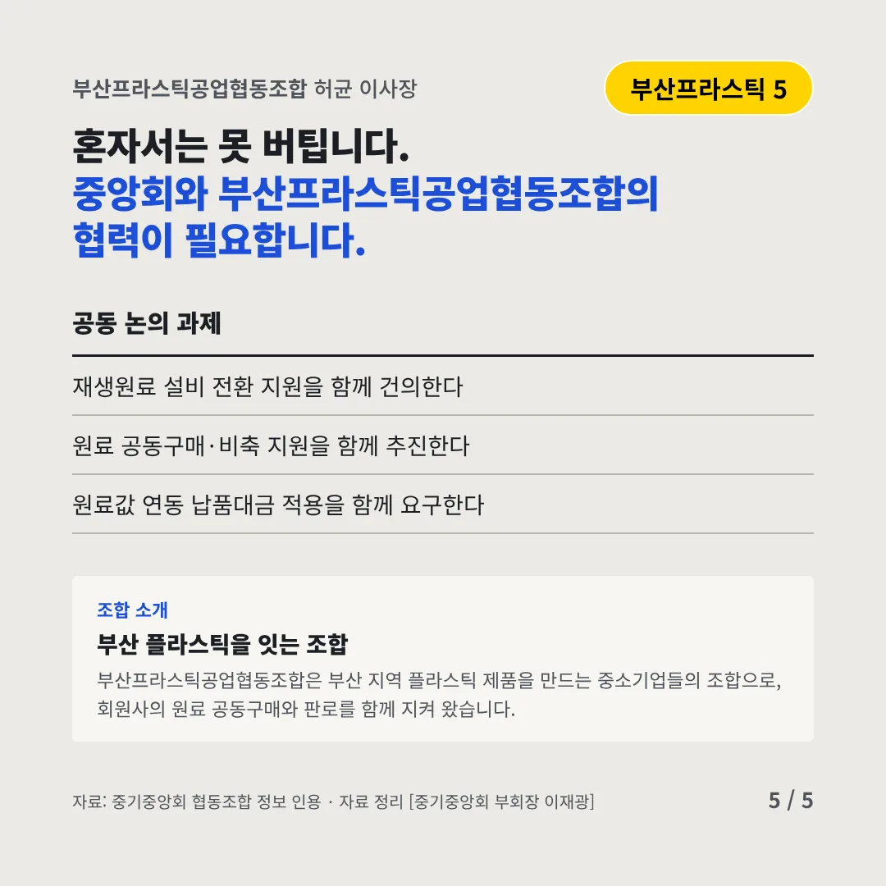
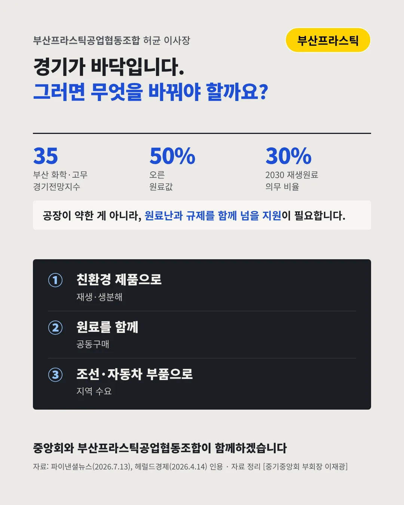

부산프라스틱공업협동조합
부산 플라스틱 공장, 100점 만점에 35점
35 부산 화학·고무 업종 3분기 경기전망지수(2026)






원료값은 오르고, 규제는 다가옵니다. 부산 플라스틱 업계는 어디로 가야 할까요?
숫자로 보는 현실
- 50%중동 전쟁 이후 오른 원료값(최대)HDPE·LDPE·PP 등(2026.4)
- 67.8%경영계획을 바꾼다는 부산 기업원가 절감·가격 인상 대응(2026)
- 30%2030 페트병 재생원료 의무지금 10%에서 세 배로
무엇이 바뀌었나
- 원료: 값이 뛰었다중동 전쟁으로 플라스틱 원료값이 크게 올랐다
- 규제: 재생원료를 써야 한다2030년까지 재생원료 사용 의무가 높아진다
- 경기: 바닥이다부산 화학·고무 업종 체감 경기가 최저 수준이다
그래도 길은 있다
- 친환경 제품으로재생·생분해 소재 제품으로 규제를 기회로 바꾼다
- 원료를 함께조합 공동구매로 원료값과 물량을 안정시킨다
- 조선·자동차 부품으로부산·경남 조선·자동차 플라스틱 부품 수요를 잡는다
한 장 요약

조합 소개
부산프라스틱공업협동조합은 부산 지역 플라스틱 제품을 만드는 중소기업들의 조합으로, 회원사의 원료 공동구매와 판로를 함께 지켜 왔습니다.
자료: 파이낸셜뉴스(2026.7.13), 헤럴드경제(2026.4.14), 다음뉴스(2026.4.28)